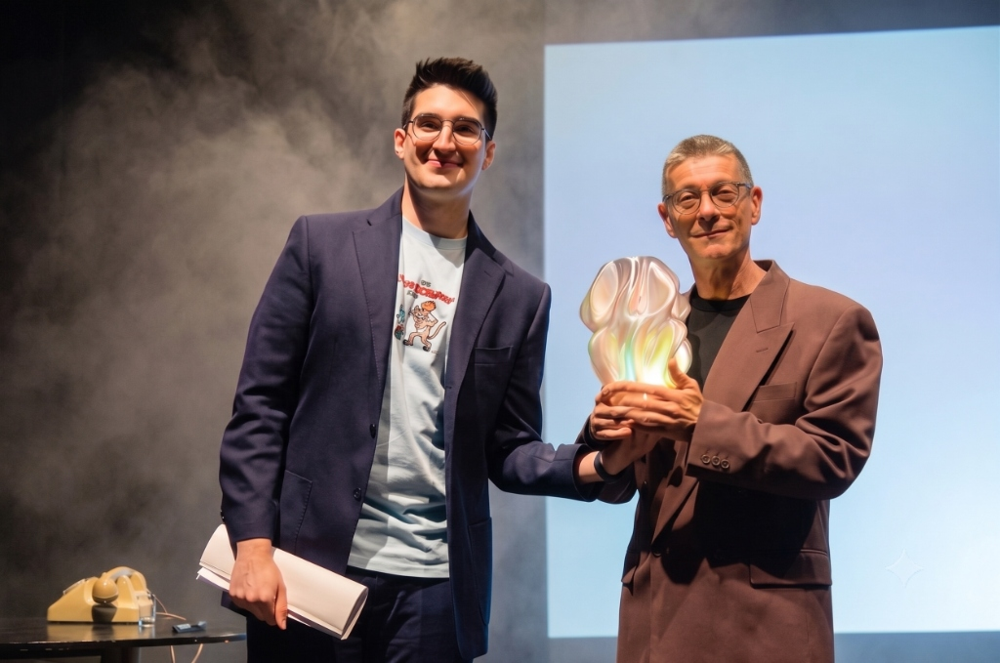

lezione-spettacolo sulla intelligenza artificiale
Un viaggio brillante e interattivo tra arte, scienza e umanità. Nato in collaborazione con l'Università di Salerno per spiegare a studenti, docenti e genitori come funziona davvero l'IA, demistificando gli algoritmi attraverso la forza del teatro e della risata.

Un'anteprima dello spettacolo per scoprire come l'intelligenza artificiale diventa teatro.
Scatti di scena per rivivere l'atmosfera, i volti e le emozioni dello spettacolo.
Come uniamo rigore accademico e divulgazione teatrale per un apprendimento profondo.
Sviluppato in collaborazione con il Dipartimento di Informatica e il Dipartimento di Matematica dell'Università di Salerno (UNISA) nell'ambito del progetto Alpha Mente. Spieghiamo il funzionamento reale dell'IA – dalle reti neurali ai modelli Transformer – con assoluta precisione scientifica ma un linguaggio accessibile a tutti.
Il palcoscenico abbatte la barriera della diffidenza verso le materie STEM. Usando l'ironia, la narrazione e il paradosso comico ideati da Paolo Capozzo, concetti complessi come gli algoritmi linguistici diventano storie indimenticabili. Gli studenti apprendono divertendosi e partecipando attivamente.
L'evoluzione dello show articolata in quadri tematici interattivi. Clicca per approfondire.
Argomenti scientifici: Definizione di chatbot e linguaggio naturale. Limiti della comicità meccanica e presenza di filtri etici/censura (safety filters).
Strategia teatrale: L'attore X recita un monologo scritto interamente dall'IA. Interazione con il pubblico per valutare il livello di comicità di tre battute proposte dal computer.
Argomenti scientifici: Diffusione dell'IA nei settori creativi (pubblicità, pittura digitale, poesia e musica sintetica con il caso di Breaking Rust).
Strategia teatrale: Coinvolgimento del pubblico nella generazione in diretta di poesie (haiku), dipinti in stile Picasso e brani musicali.
Argomenti scientifici: Definizione di intelligenza. Storia dei test di misurazione (QI di William Stern, studio di Lewis Terman). Teoria delle 9 Intelligenze Multiple di Howard Gardner. Test di Turing vs Winograd Schema Challenge.
Strategia teatrale: Divertente parodia scolastica (la valutazione dello studente "Scatuozzo"). Spiegazione dello Schema di Winograd tramite l'esempio del versamento del latte.
Argomenti scientifici: Confronto biologico e tecnologico. Struttura del cervello umano (86 miliardi di neuroni) e introduzione alle reti neurali biologiche.
Strategia teatrale: Gli attori utilizzano l'azione fisica e il lancio di un cervello di plastica per rappresentare la simulazione biologica.
Argomenti scientifici: Nascita del neurone artificiale ad opera di McCulloch e Pitts (1943). Concetti di input, pesi sinaptici, sommatoria e funzione soglia (step function).
Strategia teatrale: Recitazione con accento italo-americano nel ruolo di Pitts che propone l'algoritmo al collega McCulloch davanti a un bicchiere di whisky.
Argomenti scientifici: Funzionamento di una rete neurale multilivello (layers). Differenza tra calcoli lineari e non lineari.
Strategia teatrale: Gioco di ruolo con il pubblico: la platea si trasforma in una rete neurale umana per risolvere collettivamente un cruciverba in caratteri sconosciuti.
Argomenti scientifici: L'apprendimento supervisionato nell'IA discriminativa: concetti di Classificazione e di Regressione statistica.
Strategia teatrale: Spiegazione visiva tramite slide interattive basata su un dataset semplificato di animali (cani, gatti, conigli).
Argomenti scientifici: Funzionamento dell'IA Generativa. Rete neurale Autoencoder (collo di bottiglia). Modelli linguistici (NLP) e architettura Transformer (Attention is All You Need, 2017). Parametro di temperatura.
Strategia teatrale: Spiegazione del meccanismo di generazione delle parole: come la transizione da un sistema deterministico a uno probabilistico simula la creatività umana.
Argomenti scientifici: Semantica vs Sintassi. Significante e Significato. Semantica distribuzionale: l'ipotesi di Harris e Firth ("conoscerai una parola dalla compagnia che frequenta").
Strategia teatrale: Esperimento del "tezgüino" (parola sconosciuta compresa esclusivamente attraverso 4 frasi contestuali) per mostrare come l'IA apprende le relazioni linguistiche.
Argomenti scientifici: Limiti dell'IA: allucinazioni (l'IA inventa dati pur di completare il testo), bias di addestramento, questioni etiche (decisioni aziendali, fake news, manipolazione sociale).
Strategia teatrale: Esempio umoristico in cui tre versioni diverse dell'IA Clara (scientifica, complottista, social) rispondono alla descrizione di un tramonto.
Argomenti scientifici: Riflessione finale sull'evoluzione futura del rapporto simbiotico tra uomo e macchina.
Strategia teatrale: Congedo teatrale supportato da un suggestivo video finale con le predizioni dell'IA.
Uno dei momenti di maggiore impatto dello spettacolo è il gioco di ruolo collettivo. L'intera platea viene suddivisa in nodi e livelli di una rete neurale umana. Senza saperlo, attraverso scambi di impulsi fisici e calcoli collaborativi, gli studenti risolveranno un cruciverba in una lingua sconosciuta.
Questo esperimento pratico permette di far comprendere visivamente e fisicamente la differenza cruciale tra sintassi (l'elaborazione statistica dei dati svolta dalle macchine) e semantica (la reale comprensione umana dei concetti).
Ascolta ed effettua il download dei brani musicali generati interamente da algoritmi di Intelligenza Artificiale discussi nel Capitolo 2.
Scarica la brochure PTOF completa con tutti i dettagli pedagogici dello spettacolo, i collegamenti multidisciplinari (STEM, scienze umane, filosofia, lingua) e le proposte di attività da svolgere in classe prima e dopo la visione.
Scarica il Kit Didattico (Markdown)Compila il modulo per ricevere maggiori informazioni, proporre una data per il tuo istituto o iscriverti all'Anteprima Gratuita per Docenti e Dirigenti Scolastici che si terrà a inizio settembre.